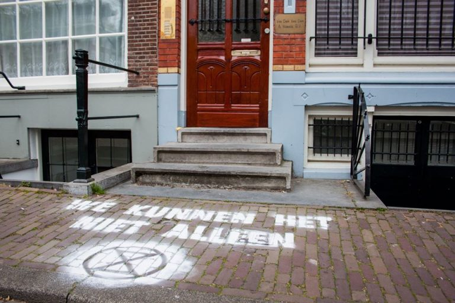
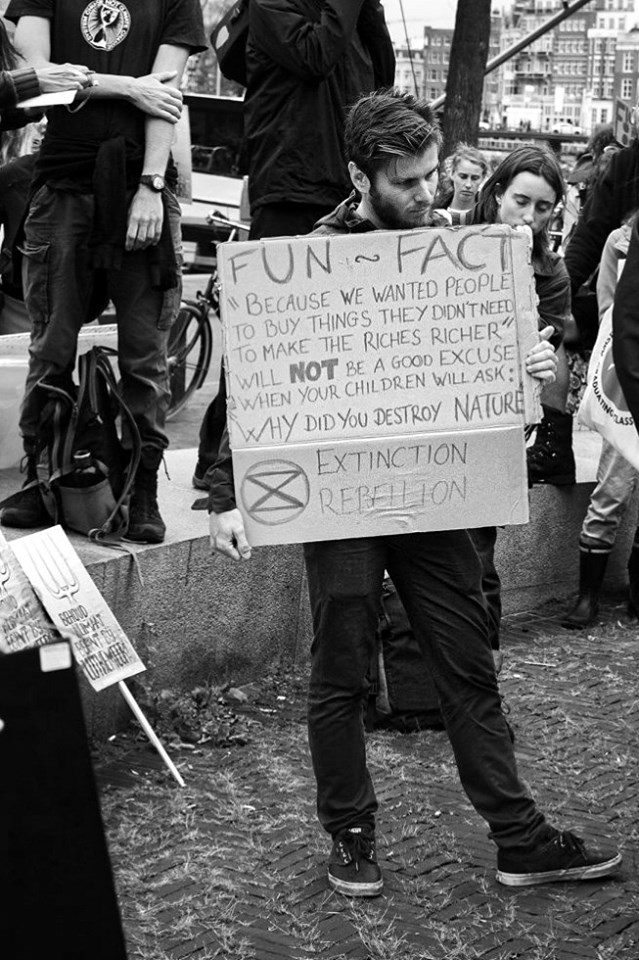

pics credit: XR, Sam ten Thij en Teresa, Extinction Rebellion NL
Mentre il mondo muove i primi passi dal blocco, un aspetto sta diventando sempre più chiaro: dobbiamo ripensare le nostre interazioni sociali, il modo in cui sceglieremo di gestire il nostro ambiente in futuro, così come i nostri valori. A questo proposito, l’attuale crisi COVID-19 potrebbe offrire una finestra unica di opportunità per imparare e riflettere su questioni fondamentali.
Il dibattito attuale sembra incentrato su come riottenere lo status quo e tornare al nostro stile di vita precedente – “una volta che tutto questo sarà finito”. Tuttavia, potremmo invece utilizzare questa crisi per riscrivere fondamentalmente il modo in cui viviamo, perché il riscaldamento globale è e sarà un compito ancora più impegnativo da frenare, rispetto all’emergenza attuale del virus.
La società civile svolge un ruolo fondamentale nel plasmare il percorso dopo COVID-19. PanDam ha parlato con Camille Miellca e Valentin Jully due attiviste di Extinction Rebellion Amsterdam.
COVID-19 e riscaldamento globale: una “pausa” necessaria per il nostro pianeta o una condanna a morte?
Con lo stop agli aerei, meno automobili in giro e molte fabbriche chiuse, COVID-19 sta probabilmente dando una “pausa” al nostro pianeta, ma le minacce poste da COVID-19 riguardo alla crisi climatica probabilmente sono maggiori dei “benefici” ? Secondo Camille, nel lungo periodo, l’ingresso sul palcoscenico del corona sarà dannosa per gli sforzi ambientali perchè farà cadere in secondo piano l’agenda e il dibattito sul clima: “il cambiamento climatico non è più nelle news, il COP di quest’anno è già stato cancellato e i governi stanno ritardando i loro sforzi per affrontare la crisi climatica “.
Ancora peggio, aziende e governi di tutto il mondo stanno sfruttando questo momento per promuovere progetti ecocidi, mentre le popolazioni sono isolate e non possono protestare “. Questi sviluppi sono preoccupanti, soprattutto se si considera che COVID-19 è un sintomo della incombente crisi ambientale: “Molti scienziati hanno avvertito negli ultimi decenni che un focolaio di virus pandemico mortale rappresentava un grave rischio a causa della deforestazione e dello sfruttamento della fauna selvatica”.
Valentin, d’altra parte, cerca di assumere una posizione più ottimista: “In realtà c’è un lato positivo significativo. Il petrolio più economico rende il fracking negli Stati Uniti e nel Canada del Nord meno redditizio e può persino portare alla chiusura di alcune centrali di estrazione, perché i costi di gestione sono troppo elevati rispetto al prezzo per cui il prodotto può essere venduto ”. Il petrolio a buon mercato, tuttavia, ha anche il suo svantaggio: ad esempio, altre fonti di energia, comprese le energie rinnovabili, diventano meno redditizie e quindi attraenti.
“Nel complesso, penso che, come tutto, se questa crisi finirà per essere un bene per l’ambiente o meno dipenderà dalla nostra reazione ad essa. A partire da ora è una pausa importante per il pianeta, ma durerà? Il risultato dipenderà da ciò che sceglieremo di fare e da “noi” mi riferisco a noi, la società civile. Spero che saremo in grado di riorganizzarci in modo da consumare meno e utilizzare l’energia in modo più ragionevole ”.
TLa crisi COVID dimostra che se i governi lo ritengono necessario, possono adottare misure drastiche e radicali in modo efficiente: perché non è successo con il clima?
Secondo Valentin, la domanda non è davvero se sia possibile per i governi intraprendere azioni massicce, ma piuttosto: sarebbe accettata dalla gente? Per arrestare la diffusione dei virus i paesi hanno adottato misure intrusive e rigorose che i cittadini sono stati disposti ad accettare a causa della paura e dell’urgenza: “La prima richiesta di XR è dire la verità: i governi dovrebbero dire la verità cruda e spaventosa sul cambiamento climatico allo stesso modo in cui stanno dicendo la verità su COVID-19. Quindi, forse, le persone avranno abbastanza paura di desiderare che vengano intraprese azioni del governo così massicce ”.
Camille ha espresso un pensiero simile: “Penso che dimostri che se ai cittadini viene detta la verità sui rischi di una situazione e sul comportamento che devono avere – e sui sacrifici che potrebbero aver bisogno di farli – la maggior parte di loro capirebbe, seguirebbe le regole e parteciperebbe anche con solidarietà, creatività e coraggio (come quello mostrato dagli operatori sanitari). Penso che sia una grande lezione da ricordare per tutti: possiamo costruire comunità, possiamo fidarci gli uni degli altri, possiamo trovare soluzioni insieme ”.
Sulla giustizia climatica
Come sottolinea Camille, sta diventando sempre più chiaro che l’attuale pandemia non riguarda tutti allo stesso modo: “Le popolazioni vulnerabili hanno maggiori probabilità di contrarre il virus e soffrono dell’impatto economico del blocco. Le popolazioni indigene in Amazzonia, ad esempio, rischiano di essere decimate dal virus, che viene portato nella loro terra da minatori clandestini ”.
Valentin estende questi pensieri ai cittadini dei paesi produttori – come il Bangladesh, dove ha vissuto – poiché questi paesi sono anche i più inquinati, e studi recenti suggeriscono che l’inquinamento atmosferico è collegato a un rischio di morte COVID-19 più elevato. Per non parlare del fatto che essere al sicuro e in lockdown è senza dubbio impossibile per le persone senza una casa e che devono continuare a lavorare a tutti i costi per sopravvivere: “A Dakka, la maggior parte delle persone vive nei sobborghi, dove un lockdown è impossibile: le persone non hanno casa e pochi soldi per comprare cibo. In questo senso, COVID-19 sarà molto difficile in questi paesi ”.
“Possiamo anche vedere l’ingiustizia su scala minore nei nostri paesi: se sei ricco puoi isolarti nella tua casa in montagna con un giardino, ma se vivi in periferia potresti condividere la tua casa con cinque persone, e la quarantena diventa molto più difficile. Inoltre, le parti più economiche della città sono quelle vicino alle strade trafficate e agli aeroporti, dove i livelli di inquinamento dell’aria sono più alti e contrarre il virus è più facile perché queste aree sono anche le più densamente popolate ”, spiega Valentin.
XR online e ribelli digitali
La teoria del cambiamento di XR è quella delle mobilitazioni di massa e della disobbedienza civile che, in periodi di isolamento, è tutt’altro che fattibile. Ma il movimento XR sta sviluppando molte alternative creative per continuare a costruire pressione ed esprimere la propria voce e le proprie esigenze. Ad esempio, lunedì 13 XR NL ha disegnato un messaggio sulla porta dei partiti politici, chiedendo di mantenere la crisi climatica in cima all’agenda politica e coinvolgendo i cittadini nel processo decisionale attraverso le Consultazioni dei cittadini: “Pensiamo sia molto importante ascoltare la scienza e chiederti di fare lo stesso. Non solo quando si tratta della crisi COVID-19, ma anche quando si tratta dell’attuale clima e della crisi ecologica. Non possiamo tornare alla “normalità”, “normale” era proprio il problema. Con amore, rabbia e rispetto, ti auguriamo una buona Pasqua “.
XR UK sta anche organizzando uno sciopero del debito, una forma di ribellione digitale, ispirato alla disobbedienza civile online di Hong Kong”, spiega Valentin. “Uno sciopero del debito è un modo efficace per bloccare le attività delle banche mobilitando le persone a rifiutare di pagare le loro rate del debito. In questo modo si crea una pressione sulle banche, che è un’opportunità per far sentire la propria voce ”.
Qual è il significato di tutto questo?
COVID-19 potrebbe essere un’importante opportunità per mobilitare il tanto necessario green-switch nella nostra economia e nel nostro stile di vita: “Se vogliamo davvero dare una pausa al nostro pianeta, abbiamo bisogno di un cambiamento radicale del sistema, per dimezzare le emissioni di CO2 a livello globale e proteggere gli ecosistemi”, spiega Camille. Se vogliamo che COVID-19 sia l’ultima crisi globale a far saltare in aria le nostre vite, noi -come società civile- dobbiamo agire e chiedere cambiamenti, in nome del pianeta e in nome della giustizia globale.